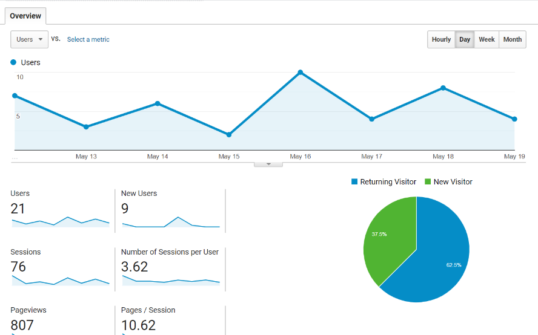
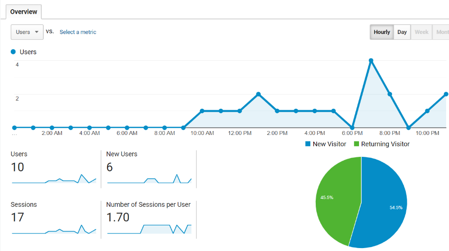
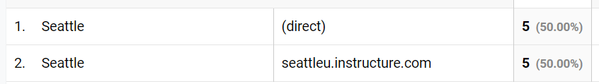

Using Analytics
At the beginning of the quarter, I set up a Google Analytics account with one Property: this User Science Journal.
I added the tracking code below the head tag to each page of this website as it was created.
For this assigment, I reviewed the Google Analytics reports for the week of May 12 through May 19.
Predictions:
Because I haven't excluded myself from the data being collected yet, and based on the assumption that the other visitors to my site are fellow students and some people I asked to click around, I made a few predictions:
- Most visitors will be in the Seattle area
- Expect an even mix of male and female
- Mostly ranging from age 30 to 50
- Visitors are accessing the site through links sent via email or text
- Mostly viewing the site via desktop
- Chrome is browser most likely used
Analytics Reports
Audience Overview
The Audience Overview report shows 21 total users this week including 9 new users.
When the "Day" tab is selected, the graph shows a low of 2 users on May 15 and a high of 10 on May 16.
 Google Analytics Audience Overview ReportOn May 16, I was updating and viewing the site and had also sent an email to potential new users for "clicks", explaining why this day saw a little bit more traffic.
The Report for May 16 shows a breakdown by time and number of views.
 Google Analytics Audience Overview Report for May 16Demographics
Location
Most visitors to the site, 19 out of 23, accessed the site in Washington State. (2 new visitors have appeared while I've been working on this post.) 19 of these users are located in Burien/Seattle. I used multiple devices and browsers to view this site over the week from both Burien and Seattle so I think most of these are me.
In checking to see how 10 visitors in Seattle got to the site, analytics shows 5 direct and 5 through Canvas. (Thanks to my fellow students in Seattle for clicking around!)
 Google Analytics Location and Source Report for SeattleAge and Gender
Sooo... it was brought to my attention that the data I was looking at was not attached to my website. Doh! I do not have access to this information with the account that I have.
I have read that the way GA determines age and gender seems to depend on what information users provide. If users have not provided this information to Google, GA makes a best guess.
Technology
Desktop vs. Mobile
Analytics showed that 19 of the 23 visitors accessed the site via desktop, 4 via mobile devices.
What kind of Mobile?
3 of the mobile devices were Apple iPhones, the other was a Google Nexus 5.
Browser
14 of the visitors used Chrome, Safari was the next used browser with 4.
Other Data
Overall 16 users got to the site directly, either by typing in the URL or clicking a link I sent them, and 7 got to the site by referral.
Under Site Content and Page View, Post 6 had 236 page views and 13 unique page views. I think this was mostly me working on my assignment on May 12, although I'm surprised at the amount of times I must have viewed this page.
Conclusion
Google Analytics seems like a powerful tool for analyzing in detail how users are accessing and moving around a website. I have a lot more to learn about it.
For improving usability, being able to see how visitors are entering, exiting, and moving around the site, seems especially valuable.
It will be helpful to exclude myself from future data collection and to invite more people to click around the site in order to gather more useful information.